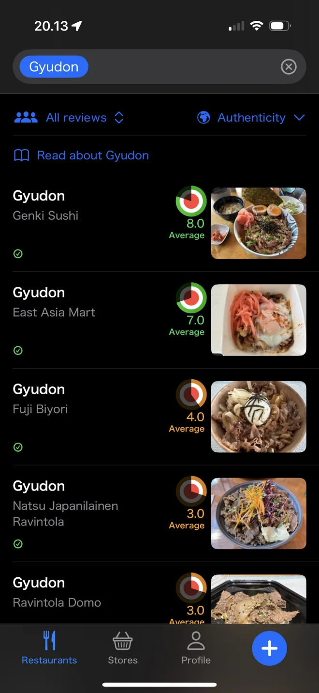
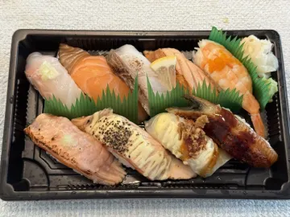
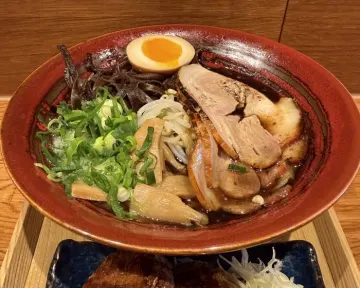

How to Tell if a Japanese Restaurant Is Authentic: 8 Signs
"Authentic" gets thrown around a lot. In practice it means food that a person from Japan would recognise and enjoy as the real thing. You can usually tell before the food even arrives.
8 signs you're in an authentic Japanese restaurant

- The menu is short and focused. A ramen shop that also serves pizza and pad thai isn't a ramen shop.
- Dishes use their Japanese names: oyakodon, karaage, tonkatsu. The menu doesn't just say "chicken rice bowl".
- There are set meals (teishoku) with rice, miso soup and small sides. That's how people eat everyday Japanese food.
- Rice is short-grain, glossy and plain. It doesn't come drenched in sauce, and isn't fried unless the dish is literally fried rice.
- Sushi isn't mostly rolls covered in mayonnaise and sweet sauce. Nigiri and sashimi lead the menu.
- Cooked food goes beyond sushi. Curry, donburi, udon, tempura and grilled fish show the kitchen knows home-style cooking.
- You'll find Japanese drinks: green tea, sake, shochu, Japanese beer.
- Japanese customers eat there. It's the oldest trick in the book, and it still works.
Authentic doesn't automatically mean better
Plenty of excellent dishes are fusion, and some very traditional plates are just okay. That's why Savory Scores keeps taste and authenticity separate. You can look for a gyudon that tastes like Yoshinoya at home, or simply the most delicious one in town, and get two different answers.
From the Savory Scores data
Most authentic Japanese restaurants in Helsinki
| # | Photo | Restaurant | Avg score | Avg authenticity | Ratings | Last rated |
|---|---|---|---|---|---|---|
| 1 |  | Sushi WagocoroHelsinki | 10 | 10 | 2 | May 2025 |
| 2 |  | Beijing8Helsinki | 10 | 9.5 | 2 | Mar 2026 |
| 3 |  | MurasakiHelsinki | 7.7 | 9.2 | 9 | Jul 2025 |
| 4 |  | Restaurant KabukiHelsinki | 8 | 9 | 4 | Nov 2025 |
| 5 |  | RojiHelsinki | 8 | 9 | 4 | Jun 2025 |
| 6 |  | Sake Bar & IzakayaHelsinki | 7.5 | 9 | 4 | Dec 2024 |
| 7 |  | Onigiri MusubiHelsinki | 8.8 | 8.7 | 5 | Oct 2025 |
| 8 |  | Ravintola KamomeHelsinki | 8.7 | 7.5 | 7 | May 2025 |
Based on 172 ratings of Japanese dishes at 48 places in the Helsinki area; places with at least 2 authenticity ratings, as of October 2026. Scores and authenticity are averages out of 10. Most dishes have only one or two ratings so far, and menus change, so check the app for the live ranking. Ate somewhere that should be on this list? Rate it in Savory Scores.
How to rank Japanese food by authenticity with Savory Scores
- Search a dish category, for example Gyudon.
- Change the sort from Score to Authenticity. The list reorders so the most traditional versions come first, each with its own authenticity dial.
- Open "Read about Gyudon" to learn what the traditional version looks like, so you know what to expect.
- Add your own review. If you know the dish from Japan, your authenticity rating is exactly what other diners need.
Want a starting point? Read our overview of Japanese restaurants in Helsinki.
Find your favourite in Helsinki. Savory Scores is free for iPhone and iPad: search a dish, compare every version in town, and rate it in one tap.